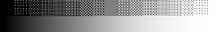
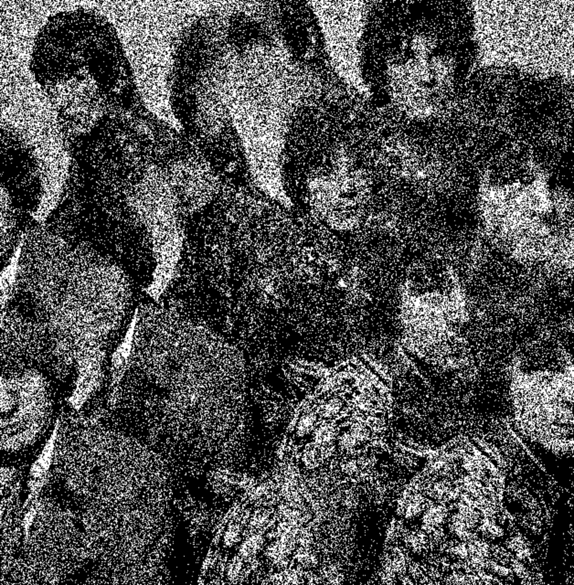
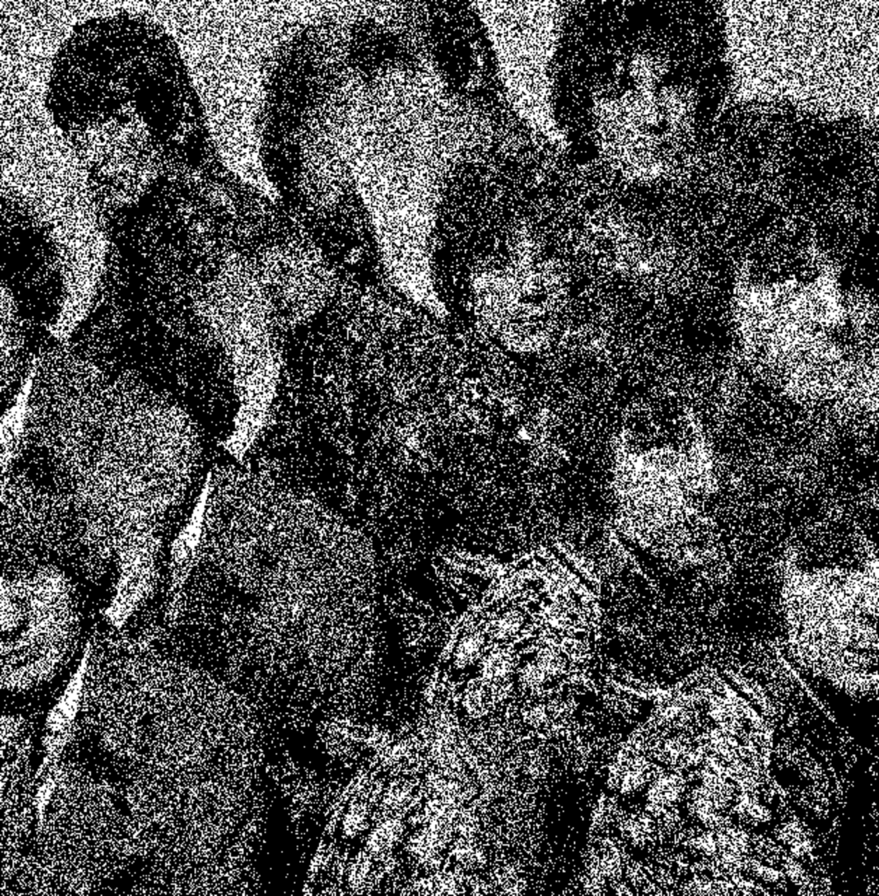
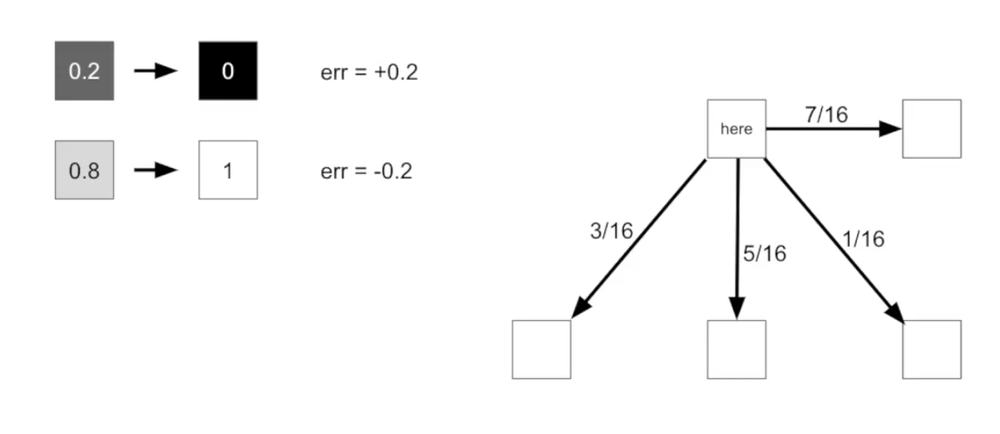

Applicazione Matematica
Applicazioni
Uno dei campi in cui il dithering ha trovato maggiore applicazione è sicuramente il campo
dell’elaborazione delle immagini, spesso dovuto al fatto che le immagini originali vengono
generate ad alta risoluzione e devono poi essere rappresentate in apparecchiature a risoluzione
minore, a causa del limite tecnologico del dispositivo oppure per ridurne il peso abbassando
la gamma di colori in una palette di tonalità minori e simulando successivamente le sfumature
di colori mancanti.
Un altro uso comune del dithering è la conversione di un'immagine in scala di grigi in bianco e nero,
in modo che la densità dei punti neri nella nuova immagine si avvicini al livello di grigio medio
dell'originale.

Applicando il dithering è possibile rappresentare immagini con gamma di valori minori sfruttando
i vantaggi dell'occhio umano, che tende a mescolare due colori se sono posti troppo vicini (acutezza visiva)
e di conseguenza rende meno evidente l’errore facendolo apparire come un disturbo generalizzato che consente la
distinzione dall’informazione principale rappresentata.
Immagini binarie
Un’immagine binaria è una immagine digitale che ha due possibili valori per ogni pixel, che corrispondono a due colori, solitamente bianco e nero. Ciò significa che ogni pixel viene memorizzato come un singolo bit, ovvero uno 0 o 1. I nomi bianco e nero o monocromatico vengono spesso utilizzati per questo concetto, ma possono anche designare qualsiasi immagine che abbia solo un campione per pixel, come le immagini in scala di grigi. Nella fase di quantizzazione i pixel vengono normalizzati, ad ogni pixel viene cioè attribuito un singolo valore tra 0 o 1.
Ordinato
Il dithering di Bayer o dithering ordinato è uno dei primi algoritmi sviluppati e consiste nell’applicare alla matrice di pixel di cui è composta l’immagine una matrice M di dimensioni arbitrarie prima della fase di quantizzazione, dove in alcuni casi il valore aggiunto a ciascun pixel dai valori della matrice potrebbe determinare il passaggio alla soglia maggiore. Spesso la matrice M scelta è quadrata di dimensioni multiple di 2 e prende il nome di matrice di Bayer; la regola generale per la sua composizione consiste nel riempire la matrice di valori progressivi:
e successivamente riordinarla in modo tale che gli elementi adiacenti a ciascun indice abbiano valori il più distante possibile, per esempio la matrice precedente potrebbe essere riordinata in questo modo:
La matrice M può anche essere ruotata o invertita in modo speculare senza alterare la funzionalità dell’algoritmo, e le matrici di Bayer possono essere generate in modo ricorsivo attraverso la formula:
Poi il valore di ogni singolo pixel della griglia viene moltiplicato per la dimensione della matrice
(nel caso dell’esempio x4), arrotondato e sommato alla matrice e quindi quantizzata:
La matrice di grandezza 2x2 è la forma più base della matrice di bayer. Aumentando la grandezza della matrice (4x4, 8x8) si va direttamente ad aumentare la profondità dell’immagine quantizzata. Questo algoritmo presenta il grosso vantaggio della semplicità di implementazione, tuttavia l’errore appare come una sorta di trama diversa per ogni matrice che si ripete periodicamente lungo l’immagine impartendo un aspetto innaturale. Questo effetto appare molto evidente utilizzando soltanto due colori.

Random
In opposizione al dithering ordinato è nato il dithering casuale in cui gli indici della matrice M complessiva dei valori applicati all’immagine originale sono calcolati in modo casuale; questo impedisce la creazione di artefatti in quanto non vi è nessun segno di una struttura ripetuta secondo un determinato schema, tuttavia la casualità dei valori genera una forma di rumore bianco distribuito in tutta l’immagine che appare granulosa e inaccurata. Questo algoritmo si presta molto bene in applicazioni in cui la non presenza di artefatti supera di importanza la fedeltà dei toni all’immagine originale. Per esempio un’immagine contenente un gradiente di sfumature di tonalità dal bianco al nero viene visualizzato meglio rispetto all’algoritmo di dithering ordinato in cui le trame che si ripetono costantemente sono decisamente visibili e vengono associate ad un rumore a bassa frequenza.
 

Floyd Steinberg
Dato che l’immagine di input è in scala di grigi e l’immagine di output sarà unicamente in bianco e nero i pixel uscenti avranno un margine di errore rispetto a quelli grigi che viene chiamato errore di discrepanza. Per ottenere un buon risultato di dithering l’errore verrà diffuso nei pixel intorno. In particolare l’algoritmo effettua il calcolo della distribuzione dell’errore partendo dal pixel in alto a sinistra e si muove da sinistra a destra e dall’alto al basso, il margine di errore all’interno della matrice verrà diviso in parti diverse e distribuito verso destra e verso il basso:
la distribuzione dell’errore è calcolata tramite dei coefficienti proporzionali all’errore ben definiti: 5/16 al pixel sottostante, 7/16 al pixel a destra, 3/16 al pixel in basso a sinistra e 1/16 al pixel in basso a destra. In forma matriciale considerando il pixel in questione al centro la matrice dei coefficienti di distribuzione è:
Floyd Steinberg (RGB)
Ridurre la profondità del colore di un'immagine spesso causa effetti collaterali indesiderati. Se l'immagine originale è una fotografia, probabilmente i colori saranno migliaia, o addirittura milioni. Limitarne il numero fa, ovviamente, perdere qualità all'immagine. Molti fattori possono modificare la qualità risultante, probabilmente il più significativo di questi è la "larghezza" della tavolozza usata. Ad esempio, un'immagine di alta qualità può essere ridotta con una tavolozza a 256 colori (Web-safe colors). Se i colori dei pixel originali venissero semplicemente spostati nel colore "più vicino" tra quelli disponibili, non avremmo applicazione del dithering. Normalmente, questo approccio causa aree di colore uniforme e perdita di dettaglio, generando macchie di colore molto diverse dall'originale. Le aree sfumate appaiono a strisce (effetto banding). L'applicazione del dithering può aiutare a limitare questi artefatti visivi e, di solito, crea un'immagine più simile all'originale. Il dithering permette di ridurre il banding e la "piattezza" dei colori.